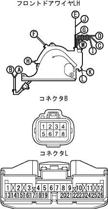

パワースライドドア ニュートラルスタートスイッチ回路 |
参照| 手順1 | ドア コントロール リレー点検 |
電圧点検
ドアコントロールリレーのコネクタBを切り離す。
 |
SST(トヨタエレクトリカルテスター)を使用して、ドアコントロールリレー車両側コネクタL7端子←→ボデーアース間の電圧を点検する。
| 端子番号 | 測定条件 | 基準 |
| L7←→ボデーアース | IGスイッチON、シフトレバーPレンジ | 10-14V |
| L7←→ボデーアース | IGスイッチON、シフトレバーPレンジ以外(フットブレーキを離す) | 0V |
|
| ||||
| NG | |
| 手順2 | ニュートラルスタート スイッチASSY点検 |
導通点検
 |
SST(トヨタエレクトリカルテスター)を使用して、各端子間の導通を点検する。
| シフト位置 | 端子番号(端子記号) | 基準 |
|---|---|---|
| Pレンジ | 6(PL)←→2(RB) 5(L)←→4(B) | 導通あり |
| Rレンジ | 1(RL)←→2(RB) | 導通あり |
| Nレンジ | 9(NL)←→2(RB) 5(L)←→4(B) | 導通あり |
| Dレンジ | 7(DL)←→2(RB) | 導通あり |
| 2レンジ | 3(2L)←→2(RB) | 導通あり |
| Lレンジ | 8(LL)←→2(RB) | 導通あり |
|
| ||||
| OK | |
| 手順3 | フロントドア ワイヤ LH点検 |
電圧点検
フロントドアワイヤ LHのコネクタBおよびＬを切り離す。
|  |
SST(トヨタエレクトリカルテスター)を使用して、フロントドアワイヤ LHコネクタ各端子間の導通を点検する。
| 端子番号 | 基準 |
| B7←→L7 | 導通あり |
|
| ||||
| OK | ||
| ||